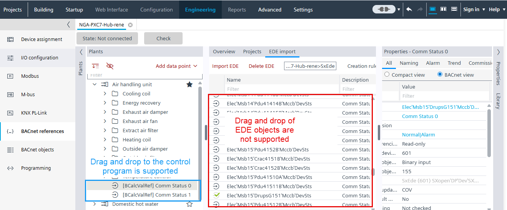

Adding a BACnet reference to the programming editor
This task will create a BACnet reference object.
Add a BACnet reference from the BACnet reference task
- The Programming editor is open.
- A BACnet reference object of an EDE object is created.
EDE file description
- Go to Building > Building structure.
- Right-click a device and select Go to engineering.
- Open the BACnet references task.
- In the Plants navigation view, select a BACnet reference object.
- Open the control program.
- Drag the BACnet object into the control program of the Programming editor.
- A BACnet reference in the control program is created.
